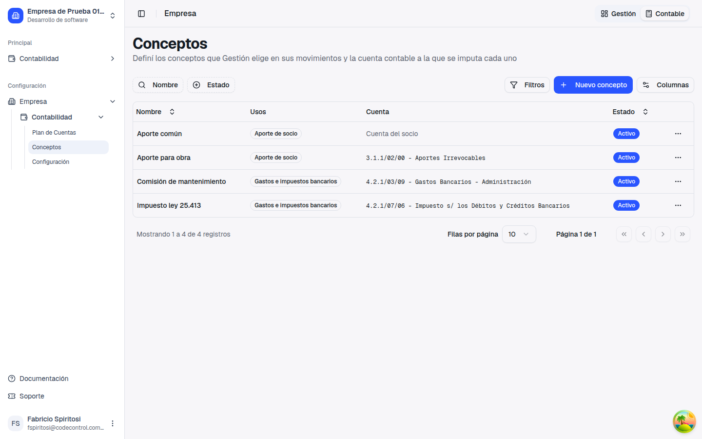
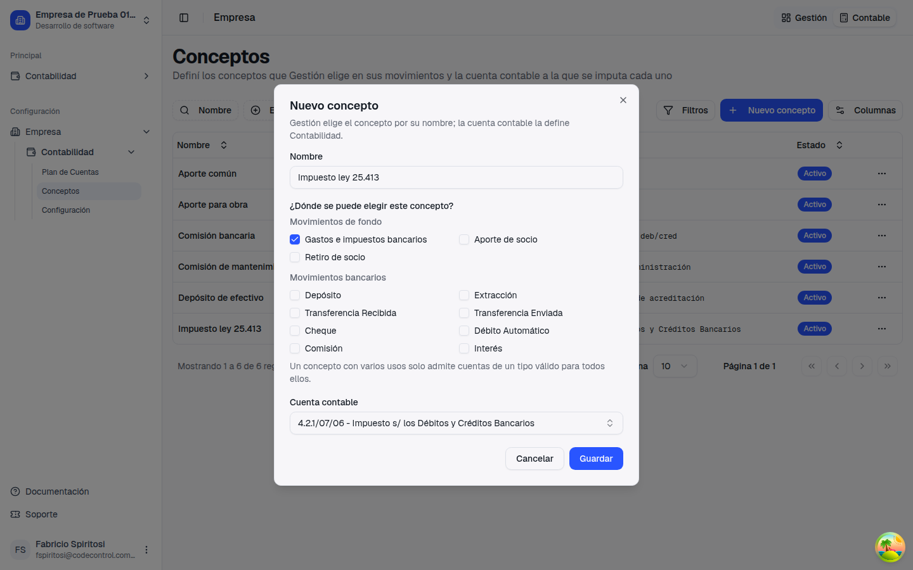
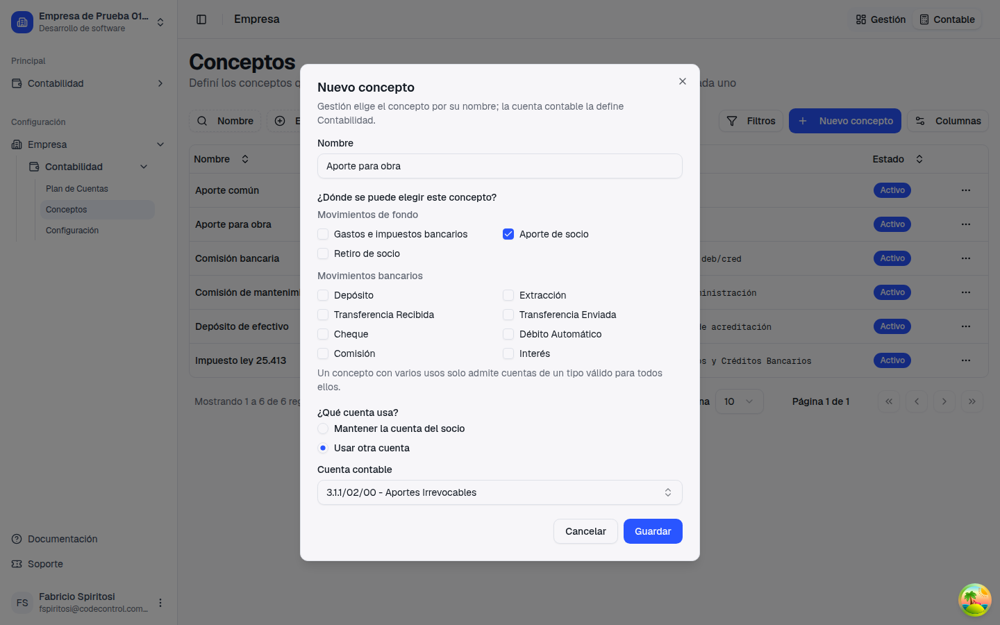
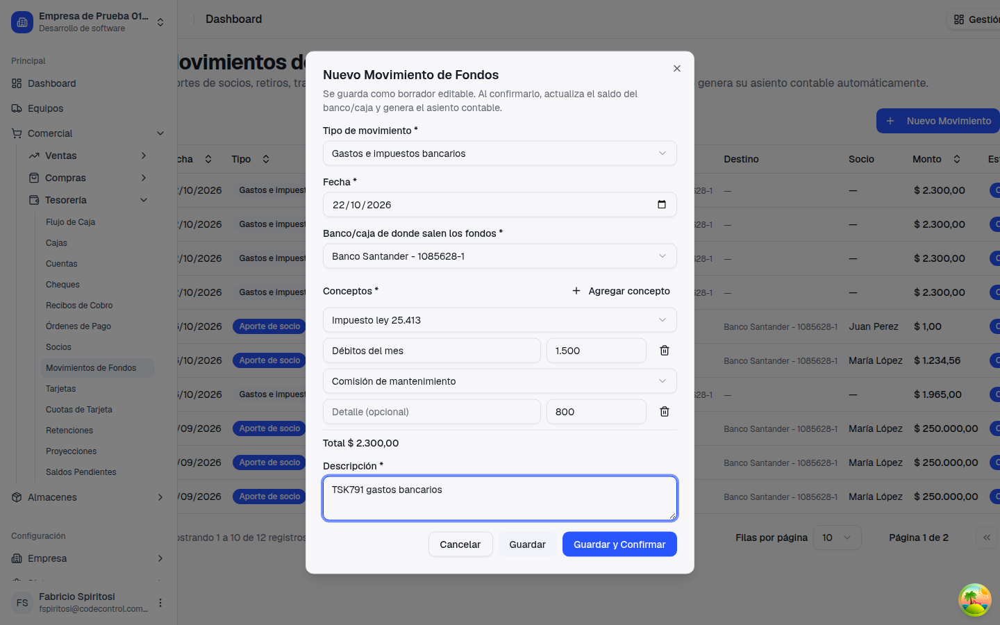
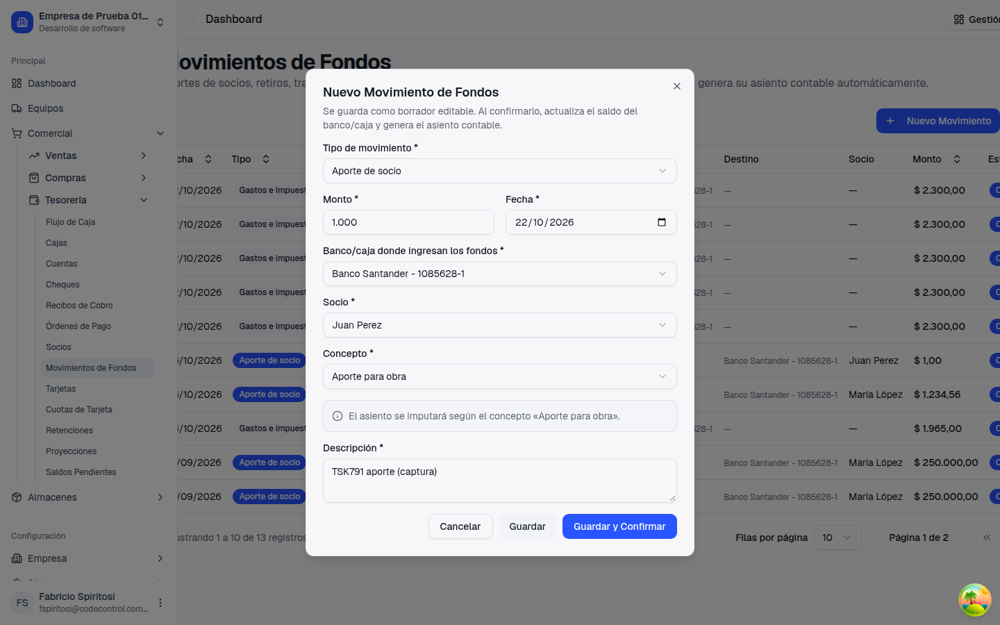
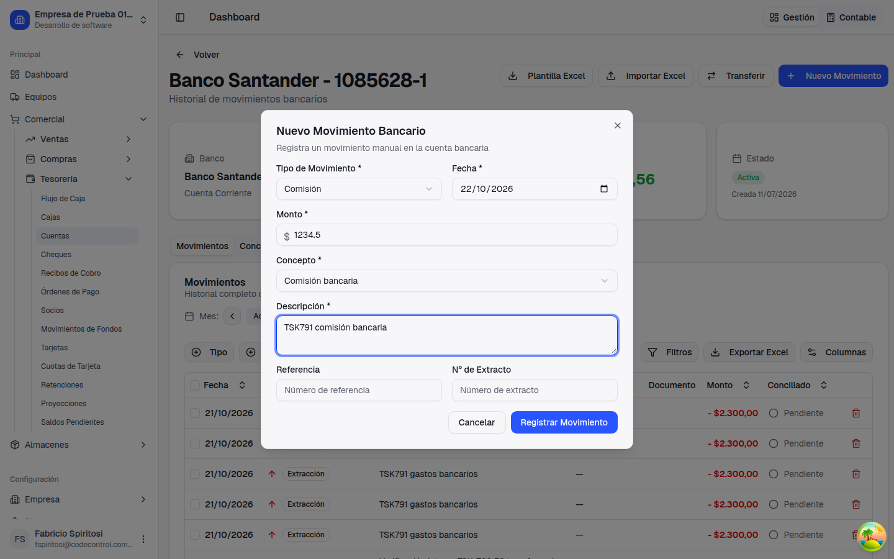
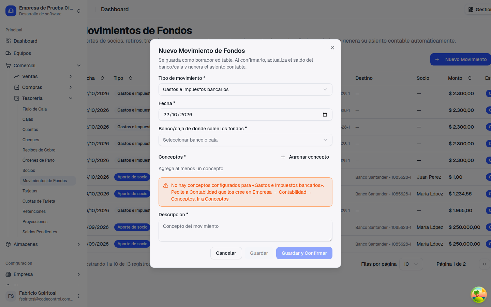

Guía de presentación — qué pediste, qué cambió, cómo se usa paso a paso, qué hay que configurar antes y qué no cambia
Importante: Contabilidad tiene que crear los conceptos antes de que Gestión cargue Gastos bancarios y movimientos bancarios manuales.
Que quien trabaja en Gestión no tenga que elegir cuentas contables. Hasta ahora había que hacerlo en dos lugares de Tesorería:
Ahora Contabilidad arma una lista de Conceptos (por ejemplo, "Impuesto ley 25.413" o "Aporte para obra"), y cada concepto ya sabe a qué cuenta va. En Gestión solo se elige el concepto: no se ve ni se elige ninguna cuenta.
En Gestión había que saber qué cuenta contable corresponde a cada gasto o movimiento.
Contabilidad define cada concepto una sola vez. En Gestión se elige por nombre, y el asiento sale con la cuenta correcta.
La lista está en Empresa → Contabilidad → Conceptos. Cada fila muestra el nombre, dónde se puede usar, la cuenta a la que va y si está activo.


Si el concepto es solo para aportes o retiros, el formulario pregunta ¿Qué cuenta usa?: mantener la cuenta del socio (como funcionaba hasta ahora) o usar otra cuenta propia del concepto.

El sistema solo ofrece cuentas que sirven para el uso elegido:
| Dónde se usa el concepto | Tipos de cuenta que admite |
|---|---|
| Gastos e impuestos bancarios | Egreso o Activo |
| Aporte de socio / Retiro de socio | Activo, Pasivo o Patrimonio Neto |
| Movimientos bancarios (Depósito, Comisión, etc.) | Activo, Pasivo o Patrimonio Neto |
Si un concepto sirve en varios lugares a la vez, solo admite las cuentas que sirven para todos. Por ejemplo, un concepto de Gastos bancarios y de Comisión bancaria admite únicamente cuentas de Activo.
En Tesorería → Movimientos de Fondos → Nuevo Movimiento, con el tipo Gastos e impuestos bancarios, cada línea tiene un Concepto (se elige de la lista), un detalle opcional y el importe. Si dejás el detalle vacío, el asiento usa el nombre del concepto. No aparece ninguna cuenta contable.

Si Contabilidad creó conceptos para aportes (o retiros), aparece el campo Concepto, obligatorio. Debajo, un aviso te dice cómo se va a imputar. Si todavía no hay conceptos para ese tipo, el formulario funciona exactamente como antes.

En Tesorería → Cuentas → (la cuenta bancaria) → Nuevo Movimiento, el campo Cuenta Contable (Contrapartida) se reemplazó por Concepto. La lista muestra solo los conceptos que sirven para el tipo elegido: si cambiás de Comisión a Depósito, el concepto elegido se limpia si no corresponde. La tabla de movimientos de la cuenta muestra una columna Concepto.

Sin conceptos de Gastos e impuestos bancarios, Gestión no puede cargar esos movimientos. Lo mismo pasa con los movimientos bancarios manuales: hace falta al menos un concepto para cada tipo que se use (Depósito, Extracción, Comisión, Interés, etc.).
Antes de que Gestión vuelva a cargar estos movimientos, Contabilidad debería crear en Empresa → Contabilidad → Conceptos, como mínimo:
Si falta, Gestión ve este aviso y no puede guardar ni confirmar el movimiento:

Son opcionales: si Contabilidad no crea conceptos para aportes o retiros, todo sigue como antes (se usa la cuenta del socio).
Para ver y editar la lista hace falta el permiso Conceptos de Contabilidad. Lo tienen el Propietario y el Desarrollador; para el rol Administrador y los roles personalizados, hay que otorgarlo desde Empresa → Roles. Gestión no lo necesita para elegir conceptos en sus formularios.
Un borrador de Gastos bancarios creado antes de este cambio abre con el concepto vacío (se conserva su detalle): hay que elegir el concepto de cada línea antes de confirmar. Lo mismo pasa con un borrador cuyo concepto Contabilidad desactivó o dejó de aplicar: el sistema no deja confirmarlo y avisa cuál es el concepto; se edita el borrador y se elige otro.